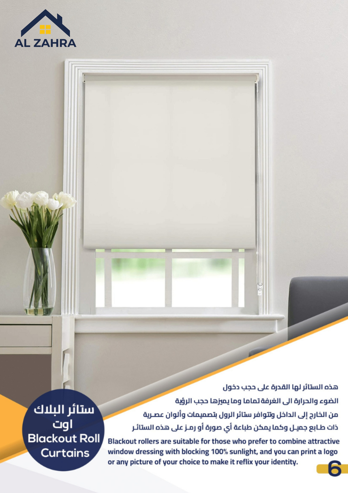
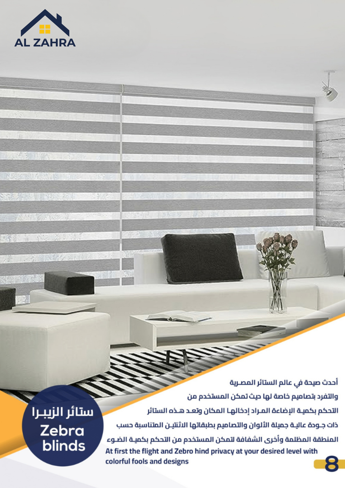
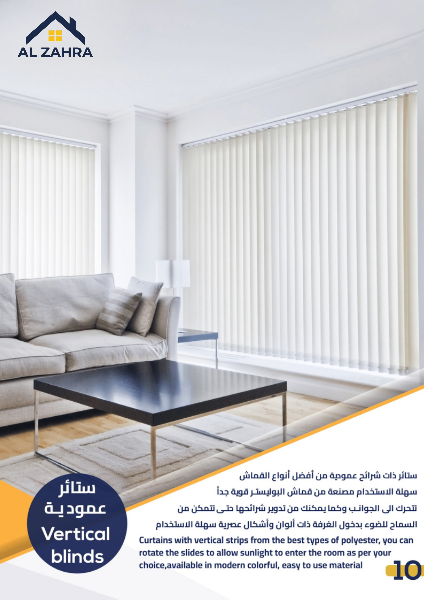
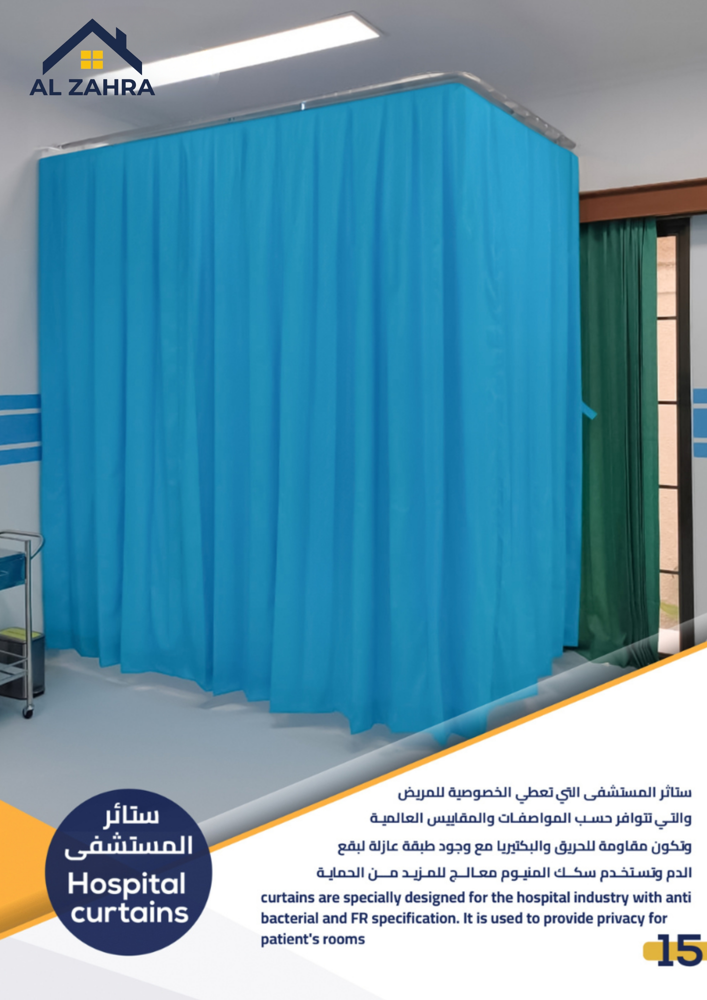
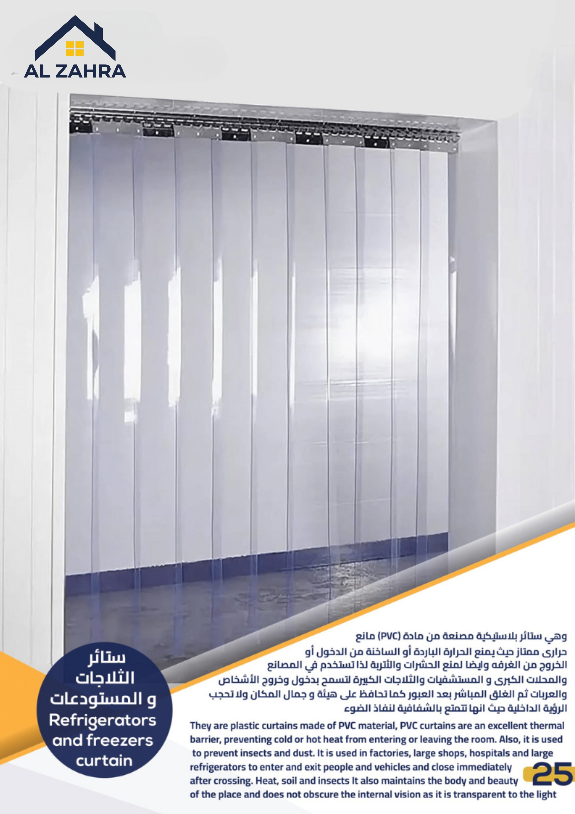
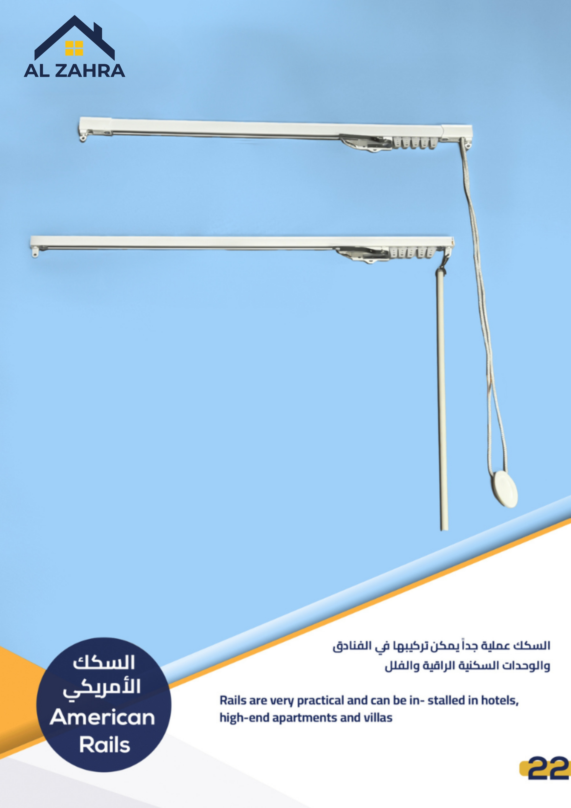
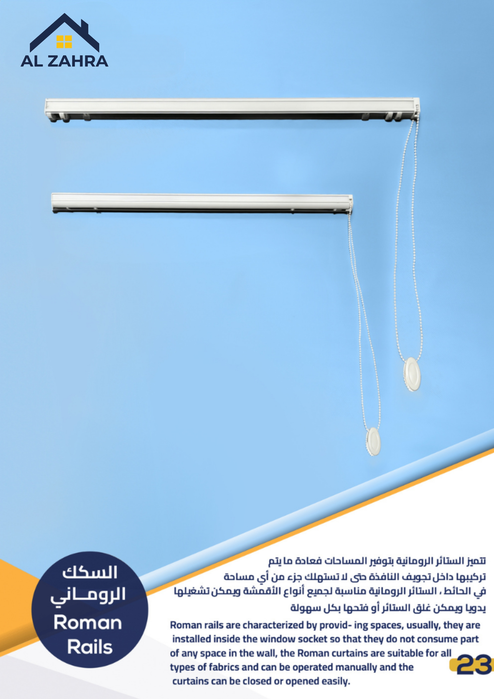
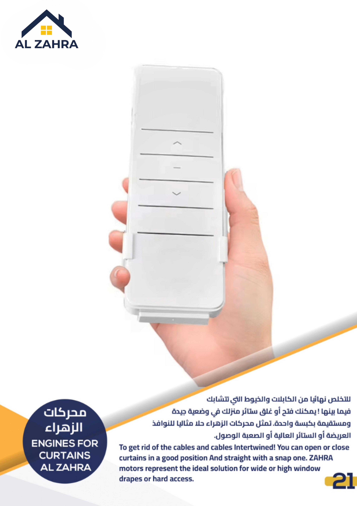
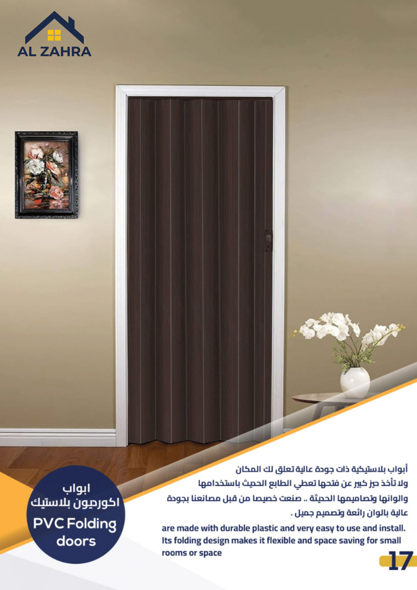

اكتشف منتجاتنا
كل منتج مصنوع بعناية ويأتي مع استشارة تصميم مجانية وتركيب احترافي بضمان شامل.
الستائر
 الأكثر طلباً
الأكثر طلباً
ستائر سكرين رول
تحكم مثالي في الإضاءة مع الحفاظ على الخصوصية ستائر سكرين رول تمنحك توازنًا دقيقًا بين دخول الضوء الطبيعي والحفاظ على راحة المكان.
- تقلل من أشعة الشمس المباشرة مع السماح بدخول إضاءة طبيعية مريحة.
- توفر رؤية جزئية دون الكشف الكامل عن المساحة الداخلية.
- تساعد في تقليل تأثير الحرارة داخل المكان.
- تضيف مظهرًا أنيقًا يناسب المنازل والمكاتب الحديثة.

الأكثر طلباًستائر بلاك أوت
راحة وخصوصية في لمسة واحدة 🏡
ستائر البلاك أوت رول بتوفرلك تحكم كامل في الإضاءة مع شكل
عصري يليق بكل مساحة.
- أقمشة شفافة، نصف حاجبة وحاجبة بالكامل
- تحكم يدوي أو كهربائي (موتور صامت)
- يمكن إضافة تصميم أو لوجو حسب رغبتك.
- عزل حراري جيد
 الأكثر طلباً
الأكثر طلباً
ستائر رول مزدوجة
تحكم في الإضاءة بطريقتك، ستائر الرول دبل بتديك حرية كاملة بين النور والخصوصية في لمسة عصرية أنيقة.
- تجمع بين الشيفون والبلاك أوت للتحكم الكامل في دخول الضوء.
- مرونة في الاستخدام
- تضيف شكل عصري مميز لأي مساحة.
- مثالية لكل الأماكن. مناسبة للبيوت، المكاتب، وغرف النوم والمعيشة.

جديدستائر زيبرا
تحكم ذكي بين الضوء والخصوصية
ستائر زيبرا تقدم حلاً عصريًا يجمع بين الشفافية والعزل في
تصميم واحد.
- تحكم مزدوج في الإضاءة
- يمكن اختيار مستوى الخصوصية بسهولة.
- تصميم عصري أنيق
- سهولة الصيانة والتنظيف

ستائر خشبية
لمسة طبيعية تضيف دفئًا وأناقة
ستائر الخشب تجمع بين المظهر الكلاسيكي والجودة العالية
لتكمل جمال المكان.
- أخشاب طبيعية وصناعية فاخرة
- تصميم كلاسيكي دائم
- متانة وجودة عالية

الستائر المعدنية
أناقة كلاسيكية مع تحكم كامل في الإضاءة
الستائر المعدنية توفر توازنًا بين الخصوصية والضوء بتصميم
عملي ومميز.
- إمكانية تعديل زاوية الشرائح بسهولة.
- خامة عملية تُنظف بسرعة دون مجهود.
- إمكانية تعديل زاوية الشرائح بسهولة.
 رائج
رائج
ستائر ويفي
انسيابية في التصميم تضيف لمسة راقية للمكان
ستائر الويف تمنح المساحات مظهرًا عصريًا يعتمد على خطوط
متناسقة وحركة هادئة.
- تموجات منتظمة تعطي مظهرًا عصريًا مميزًا.
- تنزلق بسلاسة على السكك دون تعقيد.
- تحافظ على شكل مرتب عند الفتح والإغلاق.

الستائر العمودية
تحكم مرن في الإضاءة بتصميم عصري
الستائر العمودية تمنحك حرية كاملة في ضبط الضوء مع مظهر
أنيق يناسب المساحات الحديثة.
- يمكن تدوير الشرائح لتحديد درجة دخول الضوء حسب الحاجة.
- مثالية للواجهات الزجاجية والمساحات الواسعة.
- تنزلق بسلاسة مع إمكانية الفتح الجانبي.
بديل الخشب
أناقة عصرية لجدرانك بلمسة طبيعية، مع خامة تدوم وتتحمل الرطوبة بسهولة.
- مقاوم للرطوبة
- خفيف الوزن
- تصاميم متعددة الألوان
- لا يحتاج دهانات عزل
 الأكثر طلباً
الأكثر طلباً
ستائر يابانية
تصميم عصري يمنح مساحتك طابعًا متجددًا. الستائر اليابانية تجمع بين البساطة والأناقة لتضفي لمسة فريدة على الديكور الداخلي.
- تعتمد على ألواح عريضة متناسقة تعطي مظهرًا أنيقًا ومرتبًا.
- تنزلق بسلاسة لتوفير مرونة في التحكم بالمساحة والإضاءة.
- ألوان وأبعاد حسب الطلب
- مناسبة للنوافذ الكبيرة والأبواب الزجاجية والأسطح الواسعة.
ستائر المعدنية
ستائر ذات طابع كلاسيكي جميل تتوفر بعدة ألوان
- تحكم دقيق بالإضاءة
- تصاميم متعددة الألوان
- سهولة الصيانة والتنظيف

شرائح السقف المعدنية
تصميم معماري يضيف بعدًا جمالياً للمساحات، شرائح السقف المعدنية تمنح المكان طابعًا عصريًا مع إمكانية تنويع الأشكال والألوان بسهولة.
- تتيح خيارات متعددة تناسب مختلف أنماط الديكور.
- تضيف لمسة معمارية مميزة للأسقف.
- يمكن تركيبها وتعديلها بسهولة حسب الحاجة.
- مصنوعة من خامات قوية تدوم لفترات طويلة.

ستائر المسرح
حل احترافي للمسارح والقاعات الكبرى، ستائر المسرح تجمع بين الفخامة والأداء العملي لتناسب الاستخدامات الكبيرة والمتخصصة.
- خامات ثقيلة عالية الجودة
- يمكن تشغيلها يدويًا أو عبر أنظمة تحكم.
- مصممة وفق اشتراطات الأمان الدولية.

ستائر البامبو
لمسة طبيعية هادية في كل ركن 🌿
اختار ستائر البامبو عشان تجمع بين البساطة والأناقة في نفس
الوقت.
- خامة طبيعية 100%
- تحكم دقيق بالإضاءة
- تصميمات متنوعة
- شكل راقي ومميز

الستائر الرومانية
أناقة كلاسيكية بلمسة عصرية، الستائر الرومانية تضيف توازنًا مثاليًا بين البساطة والفخامة لتكمل جمال الديكور الداخلي.
- تعتمد على طيات متناسقة تضفي مظهرًا مرتبًا وراقياً.
- تتيح ضبط مستوى الإضاءة بسهولة حسب الحاجة.
- متوفرة بخيارات متعددة تناسب مختلف أنماط الديكور.
- يمكن رفعها وخفضها بسهولة مع الحفاظ على شكلها الأنيق.

بديل الحجر
لمسة طبيعية بتكنولوجيا حديثة
بديل الحجر PU يمنحك مظهر الحجر الطبيعي مع وزن خفيف وسهولة
في التركيب.
- خفة الوزن وسهولة التركيب
- مظهر طبيعي واقعي
- متانة ومقاومة جيدة

الباركية
أداء عملي مع تصميم يجمع بين المتانة والجمال، أرضيات SPC خيار مثالي للمساحات التي تتطلب تحملًا عاليًا ومظهرًا أنيقًا.
- مقاومة للرطوبة
- عزل صوتي جيد
- مقاومة للخدوش والتآكل

ستائر السحابات الخارجية
حماية وأناقة لواجهة منزلك، ستائر السحّابات الخارجية تمنحك خصوصية كاملة وعزلًا مثاليًا مع مظهر عصري متكامل.
- عزل حراري وصوتي فعّال
- تصميم متين يساعد في حماية النوافذ من العوامل الخارجية.
- توفّر إمكانية حجب الضوء بشكل كامل أو جزئي حسب الحاجة.
- خامات قوية تتحمل الشمس والأتربة والعوامل المناخية المختلفة.

ستائر المستشفيات
خصوصية وأمان بمعايير طبية عالية، ستائر المستشفى مصممة خصيصًا لتوفير بيئة آمنة ومريحة مع أعلى درجات الحماية.
- مضادة للبكتيريا
- مقاومة للاشتعال
- توفير الخصوصية
- مصممة لتلائم المستشفيات والعيادات بمعايير احترافية.

ستائر الثلاجات و المستودعات
حل عملي للعزل والحفاظ على كفاءة المكان ستائر PVC الشفافة تمنحك حماية فعالة مع الحفاظ على سهولة الحركة والرؤية.
- عزل حراري فعّال
- تتيح الرؤية دون الحاجة إلى فتح الستارة مما يزيد من كفاءة التشغيل.
- تساعد في الحفاظ على نظافة المكان ومنع دخول العوامل الخارجية.
- مناسبة للاستخدام الصناعي والتجاري

السلك الامريكي
سيستم American Rails بيجمع بين القوة والشكل الأنيق للفنادق والفيلات.
- سهولة التركيب والاستخدام
- تحمّل عالي ومتانة
- حركة انسيابية للستائر

السلك الروماني
تصميم عملي يوفّر المساحة ويكمل أناقة المكان، السكك الرومانية خيار مثالي لمن يبحث عن البساطة والكفاءة دون التأثير على الشكل العام.
- يتم تركيبها داخل تجويف النافذة دون استهلاك مساحة إضافية.
- تناسب جميع أنواع الأقمشة مما يمنح حرية كاملة في الاختيار.
- يمكن فتحها وإغلاقها بسهولة وسلاسة.

السلك الجلاديا
تقنية متطورة لراحة يومية مثالية، سكك Glydea تمنحك تجربة تشغيل سلسة وأناقة تنسجم مع أدق تفاصيل التصميم الداخلي.
- نظام متطور يحمي القماش عبر خاصية التشغيل والإيقاف التدريجي.
- ينسجم مع الديكور الداخلي دون التأثير على المظهر العام.
- حركة انسيابية بدون ضوضاء لراحة تامة في الاستخدام.

الستائر الكهربائية
تحكّم متطور يمنحك الراحة والسهولة، الستائر الكهربائية توفر تجربة استخدام ذكية تجمع بين الأداء العملي والتصميم العصري.
- تحكم عن بُعد
- راحة في الاستخدام
- محركات متطورة تضمن كفاءة واستمرارية في التشغيل.
- مناسبة لمختلف المساحات. مثالية للمنازل، المكاتب، والمساحات الحديثة التي تعتمد على التقنيات الذكية.

محركات الزهراء
تحكّم ذكي يسهّل يومك، مع محركات الزهراء، يمكنك تشغيل الستائر بكل سلاسة ودقة بلمسة واحدة فقط.
- تشغيل آلي مريح
- حركة انسيابية بدون ضوضاء لضمان راحة الاستخدام.
- مثالية للمساحات الكبيرة
الأبواب

الأكثر اقتصاداًأبواب أكورديون بلاستيك
حل عملي ذكي لاستغلال المساحات، أبواب الأكورديون البلاستيكية تمنحك مرونة في تقسيم المكان مع تصميم عصري يناسب الاستخدام اليومي.
- تصميم قابل للطي يتيح استغلال المساحات الصغيرة بكفاءة.
- مصنوعة من بلاستيك عالي الجودة يجمع بين القوة وخفة الوزن.
- ألوان متعددة وقابلة للقص بالمقاس
- تركيب سريع دون إتلاف الجدران
 فاخر
فاخر
أبواب أكورديون جلد
حل عملي وأنيق لتقسيم المساحات. أبواب الأكورديون الجلدية تجمع بين المتانة والتصميم العصري لتوفير خصوصية مرنة تناسب مختلف الاستخدامات.
- خامة الجلد تضيف لمسة فخامة تناسب مختلف أنماط الديكور.
- تصميم قابل للطي يتيح استخدام المساحات بكفاءة عالية.
- مثالي للمكاتب وغرف الاجتماعات
- مناسبة للمنازل والمكاتب لفصل المساحات بطريقة عملية ومرنة.
من الاستشارة إلى التسليم
أربع خطوات بسيطة تفصلك عن مساحة أجمل.
استشارة مجانية
تواصل معنا وأخبرنا باحتياجاتك، ونصلك في الوقت المناسب.
قياس وتصميم
فريقنا يأخذ القياسات الدقيقة ويقترح التصميم الأنسب لمساحتك.
التصنيع والتجهيز
ننفذ طلبك بدقة عالية باستخدام أجود الخامات وأحدث التقنيات.
التركيب والتسليم
تركيب احترافي في الموعد المحدد مع ضمان شامل وخدمة ما بعد البيع.
ما يجعلنا الخيار الأول
أكثر من 25 سنة من الخبرة ترتكز على ثقة عملائنا.
جودة مضمونة
نختار أجود الخامات من موردين معتمدين ونضمن لك منتجاً يدوم سنوات بدون أي خلل.
قياس وتصميم مجاني
نصلك في بيتك أو مكتبك لأخذ القياسات الدقيقة وتقديم مقترح تصميم مخصص بدون أي رسوم.
تركيب احترافي
فريق مدرّب يصل في الموعد المحدد وينهي التركيب بإتقان كامل دون إتلاف الجدران أو الأثاث.
ضمان شامل
جميع منتجاتنا وأعمال التركيب مغطاة بضمان شامل يريح بالك ويحميك من أي مفاجآت.
التزام بالمواعيد
نحترم وقتك. إذا تأخرنا عن الموعد المتفق عليه نقدم خصماً تعويضياً على الفاتورة.
دعم ما بعد البيع
فريق خدمة العملاء متاح لمساعدتك في أي استفسار أو صيانة بعد الشراء.
جاهز لتحويل مساحتك؟
تواصل معنا الآن للحصول على استشارة وقياس مجاني — بدون أي التزام.